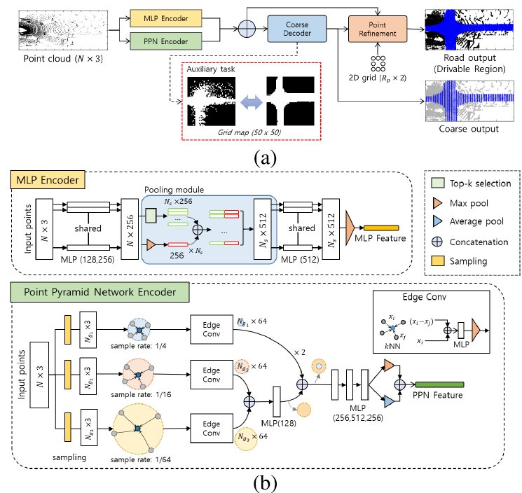
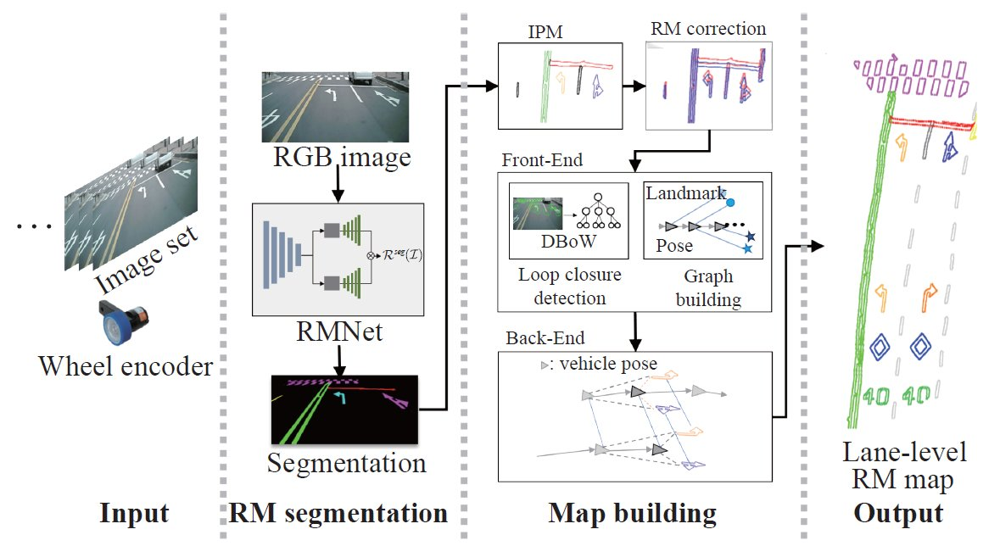
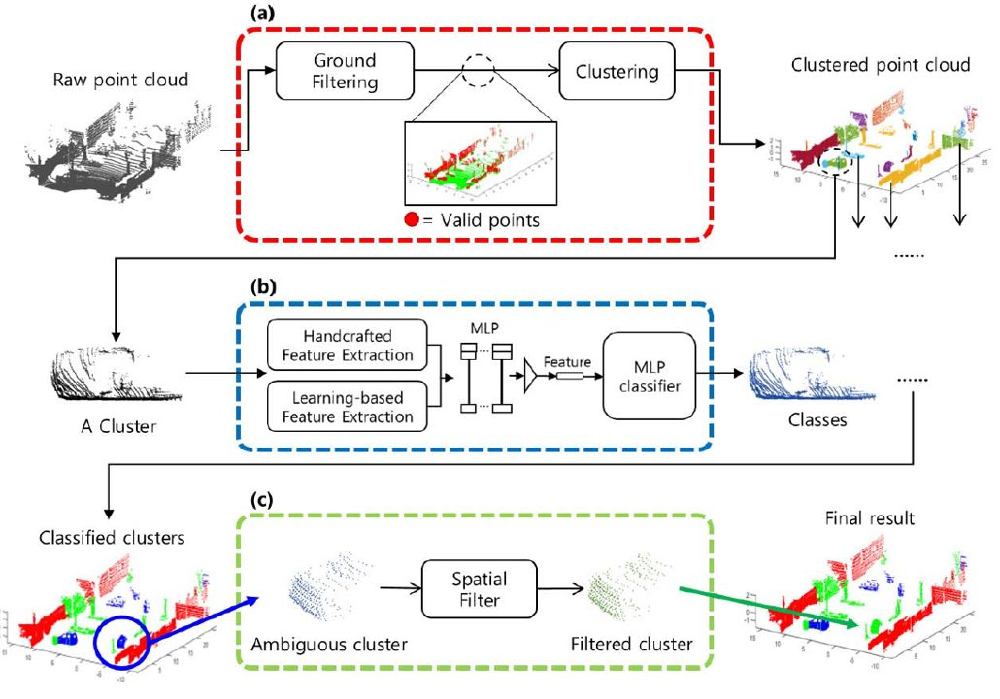

Publications

2025
Latent Diffusion-based Pedestrian Attention Estimation for Autonomous Driving

2024
Drivable Region Completion via a 3D LiDAR

2022
A Lane-Level Road Marking Map Using a Monocular Camera

2022
Real-Time Driving Scene Understanding via Efficient 3-D LIDAR Processing
2025
Pedestrian Attention Estimation via Latent Diffusion for Safe Driving
ICCAS 2025 — 25th International Conference on Control, Automation, and Systems
2022
Efficient Sensor Fusion using Transformer
ASCC 2022 — 13th Asian Control Conference, Jeju
2022
Graph-Based Point Tracker for 3D Object Tracking in Point Clouds
AAAI 2022 — 36th AAAI Conference on Artificial Intelligence, Vancouver
2021
The Effective Method for 3D LiDAR Point Clouds Processing
UR 2021 — 18th International Conference on Ubiquitous Robots, Gangneung
2018
Object Classification of Laser Scanner by Using Recurrent Neural Network
IEEE TENCON 2018, Jeju
2018
Road Lane Semantic Segmentation for High Definition Map
IEEE IV 2018 — Intelligent Vehicle Symposium, Changshu
2017
Real Time Road Lane Detection for Outdoor Autonomous Navigation of Mobile Robot
ICCAS 2017
2016
Histogram-Model Based Road Boundary Estimation by Using Laser Scanner
ICCAS 2016
2025
자율 주행 모빌리티의 충돌 방지를 위한 보행자 관심 판단 모듈
ICROS 2025 — 제40회 제어로봇시스템학회 학술대회, 6월
2021
악천후 상황이 라이다 센서에 미치는 영향 연구
한국자동차공학회 춘계학술대회, 2021
2020
자율 주행차의 라이다 센서를 위한 Blockage 검출
CICS 2020, 제주, 10월
2020
LSTM 기반의 다중 차량 경로 예측 네트워크
ICROS 2020, 고성, 7월
2019
SLAM 모듈을 위한 레이저 스캐너 센서 불필요 데이터 제거
IPIU 2019, 제주, 2월
2019
레이저 스캐너를 이용한 박스 형태 기반 이동로봇 검출 및 추적
제14회 한국로봇종합학술대회, 평창, 1월
2018
딥러닝을 이용한 도로 차선 검출 알고리즘
제13회 한국로봇종합학술대회, 횡성, 1월
2017
2차원 레이저 스캐너를 이용한 연석 검출 알고리즘
제12회 한국로봇종합학술대회, 평창, 2월
2016
이동 로봇의 자율 주행을 위한 사람 인식 알고리즘
제11회 한국로봇종합학술대회, 평창, 1월